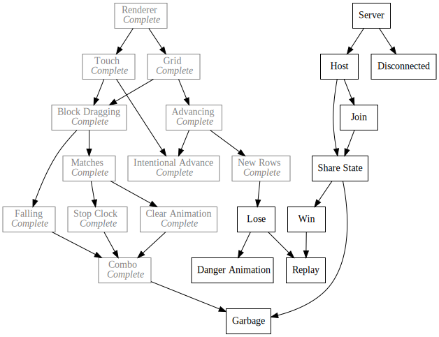

Day43 - New Block Art
Made replacement art for the tetris attack textures
2019-03-22

Today I worked on replacement art for the tetris attack textures I stole as temperary assets. I'm not 100% happy with my replacements yet but they will do for now until I figure out how to tweek them into shape.
Colors
Instead of picking colors from scratch, I took the advice of step 1 here of using a pre built palette to simplify color choices. The list of palettes on this site is incredibly extensive and diverse and gave lots of options to choose from. After mulling them all over I eventually landed on one called 20P DX Palette.

I decided to mirror Tetris Attack by allowing two colors for each block and depicting a simple graphic inside each. I tried to stray from the geometric shapes that Tetris Attack favors and moved toward more recognizable objects in nature such as a cloud, leaf or stick.
Below is what I landed on for now:

Unfortunately the cloud and rain drop blocks are too close in color, but for the most part I am very pleased with how the rest turned out. Because I'm so bad at this stuff it took all afternoon to finish (and its already late), so I will leave you with this gif of me playing with the new blocks:

Till tomorrow,
Keith